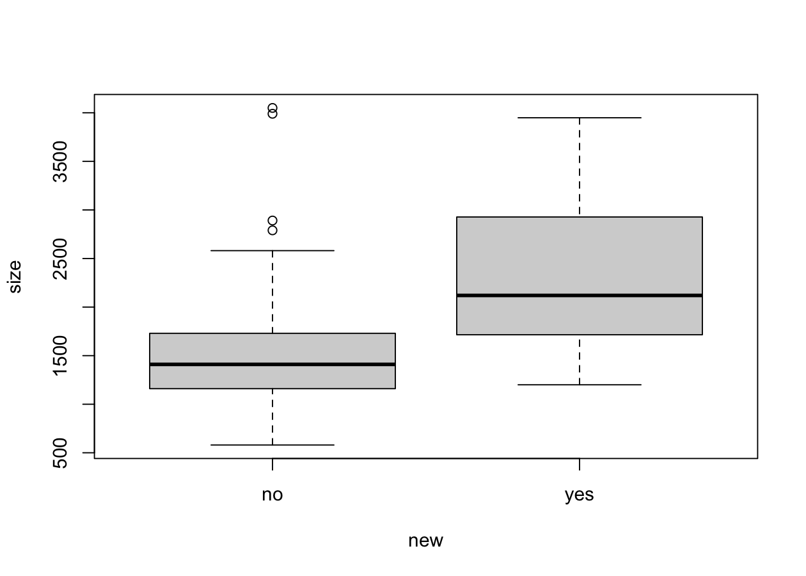
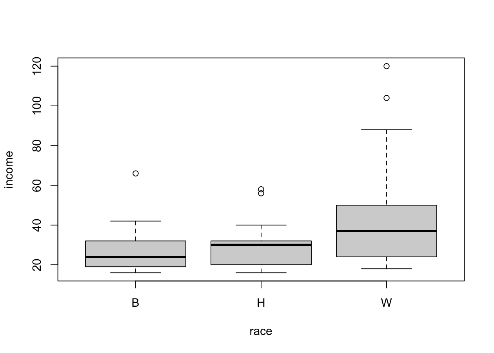
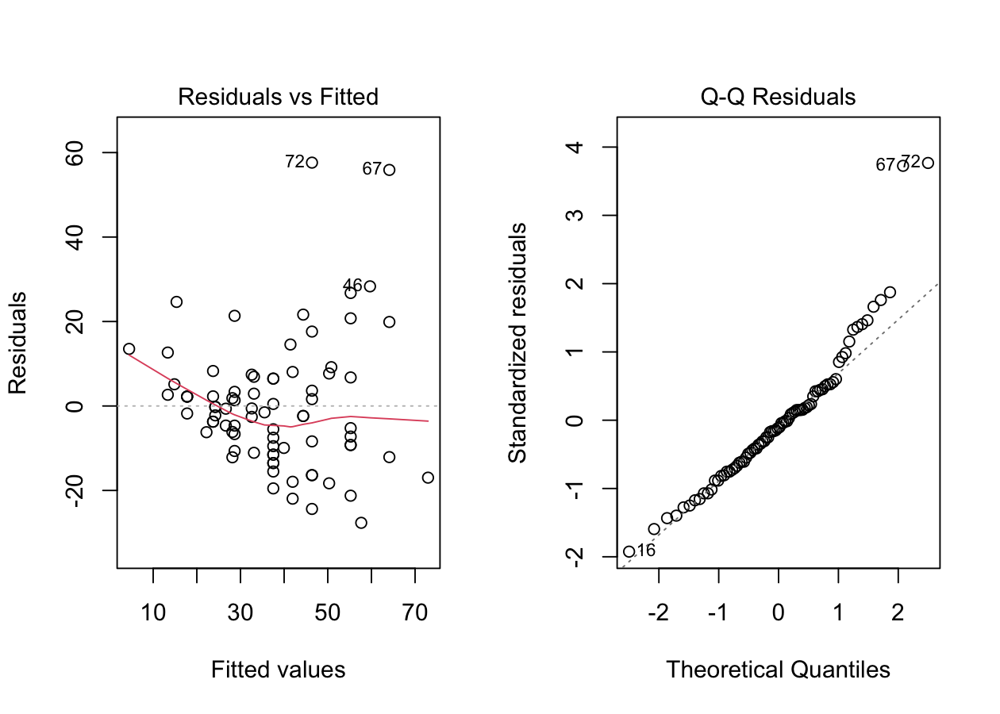

Houses <- read.table("data/houses.csv", header = TRUE, sep = ",")Qualitative explanatory variables
Programming and Data Analysis with R
Homepage
Topics covered
- A qualitative explanatory variable in a linear model
- Indicator variables and reference category
- Adjusting for a confounding variable
- Comparing several groups: the analysis of variance (ANOVA)
Back to Unit K
In Unit K we used two quantitative explanatory variables, the diameter and the height of the black cherry trees. In this unit we include also qualitative explanatory variables.
A qualitative explanatory variable
Let us go back to the Houses data of Exercises B: the selling price (price, thousands of dollars) and the size (size, square feet) of 100 houses, and whether the house is new (new, 1 = yes, 0 = no).
As done previously, first of all you need to download the file houses.csv and save it on your computer. Link to the file
Alternatively, we can simply obtain them using the link:
path <- "https://tommasorigon.github.io/EnvEcoStat/data/houses.csv"
Houses <- read.table(path, header = TRUE, sep = ",")Houses$new <- factor(Houses$new, levels = c(0, 1), labels = c("no", "yes"))A qualitative variable can be included in lm as any other variable:
fit_new <- lm(price ~ new, data = Houses)
coef(fit_new)(Intercept) newyes
207.8511 228.5943 R creates the indicator variable newyes, equal to 1 for new houses and 0 for old ones. Denoting it by x_i, the model is the simple linear regression model of Unit K,
Y_i = \beta_0 + \beta_1 x_i + \epsilon_i,
so that \beta_0 is the mean price of old houses (x_i = 0) and \beta_0 + \beta_1 is the mean price of new houses (x_i = 1). Therefore, \beta_1 is the difference between the mean prices of new and old houses. The first category, no, is the reference category: it has no indicator. With c categories, R creates c - 1 indicators, one for each category except the first.
price_no <- Houses$price[Houses$new == "no"]
price_yes <- Houses$price[Houses$new == "yes"]
mean(price_no)[1] 207.8511mean(price_yes) - mean(price_no)[1] 228.5943Adjusting for the size
New houses are, however, also larger:
boxplot(size ~ new, data = Houses)
Let us compare new and old houses of the same size, with the model Y_i = \beta_0 + \beta_1 x_{i1} + \beta_2 x_{i2} + \epsilon_i, where x_{i1} is the size and x_{i2} is the indicator of new houses. Now \beta_2 is the difference between the mean prices of new and old houses, at fixed size:
fit_size_new <- lm(price ~ size + new, data = Houses)
summary(fit_size_new)
Call:
lm(formula = price ~ size + new, data = Houses)
Residuals:
Min 1Q Median 3Q Max
-307.653 -51.562 -8.667 28.394 245.799
Coefficients:
Estimate Std. Error t value Pr(>|t|)
(Intercept) -60.34630 22.04421 -2.738 0.00737 **
size 0.17420 0.01319 13.204 < 2e-16 ***
newyes 86.60442 27.97956 3.095 0.00257 **
---
Signif. codes: 0 '***' 0.001 '**' 0.01 '*' 0.05 '.' 0.1 ' ' 1
Residual standard error: 80.82 on 97 degrees of freedom
Multiple R-squared: 0.7226, Adjusted R-squared: 0.7169
F-statistic: 126.3 on 2 and 97 DF, p-value: < 2.2e-16At fixed size, a new house costs on average 87 thousand dollars more than an old one, and not 229: a large part of the difference between the two groups is due to the size. The difference remains statistically significant (P-value 0.003).
The effect of a variable can change a lot when another variable, related to both the explanatory variable and the response, enters the model. The size is a confounding variable for the comparison between new and old houses.
Diagnostic plots for the Houses data
As in Unit K, we check the assumptions of the model with the first two diagnostic plots:
par(mfrow = c(1, 2)) # Two plots side by side
plot(fit_size_new, which = 1:2)
par(mfrow = c(1, 1))Residuals vs Fitted: the cloud is fan-shaped, since the residuals are more spread out for the more expensive houses. The variance is therefore not constant. House 64, the largest one, has a very negative residual: its price is much lower than predicted from its size.Q-Q Residuals: in the upper part, the points lie clearly above the dotted line. The distribution of the residuals is skewed to the right, as the prices themselves in Exercises B.
The normality and constant variance assumptions are therefore questionable: the estimates are still meaningful, but the P-values and the intervals should be taken as approximate.
Comparing three groups
The Income data file of Agresti and Kateri (2022) reports, for n = 80 adult Americans aged over 25, the annual income (income, thousands of dollars), the number of years of education (education) and the racial-ethnic group (race: B for Black, H for Hispanic, W for White).
As done previously, first of all you need to download the file income.csv and save it on your computer. Link to the file
Income <- read.table("data/income.csv", header = TRUE, sep = ",")Alternatively, we can simply obtain them using the link:
path <- "https://tommasorigon.github.io/EnvEcoStat/data/income.csv"
Income <- read.table(path, header = TRUE, sep = ",")Income$race <- factor(Income$race)
table(Income$race)
B H W
16 14 50 boxplot(income ~ race, data = Income)
With c = 3 categories, R creates c - 1 = 2 indicators, raceH and raceW, and the first category, B, is the reference:
fit_race <- lm(income ~ race, data = Income)
summary(fit_race)
Call:
lm(formula = income ~ race, data = Income)
Residuals:
Min 1Q Median 3Q Max
-24.48 -12.48 -4.48 7.52 77.52
Coefficients:
Estimate Std. Error t value Pr(>|t|)
(Intercept) 27.750 4.968 5.586 3.37e-07 ***
raceH 3.250 7.273 0.447 0.6562
raceW 14.730 5.708 2.581 0.0118 *
---
Signif. codes: 0 '***' 0.001 '**' 0.01 '*' 0.05 '.' 0.1 ' ' 1
Residual standard error: 19.87 on 77 degrees of freedom
Multiple R-squared: 0.0993, Adjusted R-squared: 0.0759
F-statistic: 4.244 on 2 and 77 DF, p-value: 0.01784The model is Y_i = \beta_0 + \beta_1 x_{i1} + \beta_2 x_{i2} + \epsilon_i, where x_{i1} and x_{i2} are the indicators of Hispanics and Whites. Denoting by \mu_B, \mu_H and \mu_W the mean incomes of the three groups, we have \beta_0 = \mu_B, \beta_1 = \mu_H - \mu_B and \beta_2 = \mu_W - \mu_B. Indeed, the estimates are the differences between the sample means:
income_B <- Income$income[Income$race == "B"]
income_H <- Income$income[Income$race == "H"]
income_W <- Income$income[Income$race == "W"]
c(mean(income_B), mean(income_H), mean(income_W))[1] 27.75 31.00 42.48c(mean(income_H) - mean(income_B), mean(income_W) - mean(income_B))[1] 3.25 14.73The analysis of variance
The three groups have the same mean if H_0: \mu_B = \mu_H = \mu_W, that is, if H_0: \beta_1 = \beta_2 = 0. This is exactly the hypothesis of the F test in the last line of summary(fit_race), also obtained with the command anova:
anova(fit_race)Analysis of Variance Table
Response: income
Df Sum Sq Mean Sq F value Pr(>F)
race 2 3352.5 1676.24 4.2444 0.01784 *
Residuals 77 30409.5 394.93
---
Signif. codes: 0 '***' 0.001 '**' 0.01 '*' 0.05 '.' 0.1 ' ' 1This table is called analysis of variance (ANOVA), because the test compares two sources of variability:
- the row
racemeasures the variability between the groups, that is, how far the three sample means are from each other; - the row
Residualsmeasures the variability within the groups. ItsMean Sqis s^2, the estimate of \sigma^2, with n - 3 = 77 degrees of freedom.
The F value is the ratio of the two Mean Sq, 1676.24 / 394.93 = 4.24. The P-value is 0.018: there is evidence that at least two mean incomes differ. In the table Coefficients of summary(fit_race), the difference between Whites and Blacks is significant (P-value 0.012), while the one between Hispanics and Blacks is not (P-value 0.656). Comparing all the pairs of groups would require some additional care (multiple comparisons), which is beyond the scope of this unit.
Adjusting for education
As in Unit K, we can add a quantitative variable to the model:
fit_race_edu <- lm(income ~ race + education, data = Income)
summary(fit_race_edu)
Call:
lm(formula = income ~ race + education, data = Income)
Residuals:
Min 1Q Median 3Q Max
-27.664 -9.622 -1.642 6.552 57.620
Coefficients:
Estimate Std. Error t value Pr(>|t|)
(Intercept) -26.5379 8.5124 -3.118 0.00257 **
raceH 5.9407 5.6702 1.048 0.29809
raceW 10.8744 4.4730 2.431 0.01741 *
education 4.4317 0.6191 7.158 4.42e-10 ***
---
Signif. codes: 0 '***' 0.001 '**' 0.01 '*' 0.05 '.' 0.1 ' ' 1
Residual standard error: 15.46 on 76 degrees of freedom
Multiple R-squared: 0.462, Adjusted R-squared: 0.4408
F-statistic: 21.75 on 3 and 76 DF, p-value: 2.853e-10- Each additional year of education corresponds, on average, to 4.43 thousand dollars of additional income, adjusting for the group.
- Adjusting for education, the difference between the mean incomes of Whites and Blacks is 10.9 thousand dollars, instead of 14.7: part of the difference between the groups is due to education.
Diagnostic plots for the Income data
par(mfrow = c(1, 2))
plot(fit_race_edu, which = 1:2)
par(mfrow = c(1, 1))The red line of Residuals vs Fitted is roughly flat, but two people, numbers 67 and 72, have incomes much higher than predicted. In the Q-Q Residuals plot, the points in the upper part lie above the dotted line: as is typical for incomes, the residuals are skewed to the right. Also here, the P-values should be taken as approximate.
References
Agresti, A., and Kateri, M. (2022), Foundations of statistics for data scientists, CRC Press.